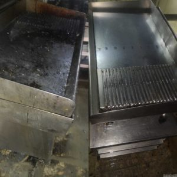

Introducción a la limpieza después de un incendio
La limpieza después de un incendio en un restaurante es una tarea desafiante pero crucial para la rápida recuperación y reanudación de operaciones. Este proceso no solo implica la limpieza física del espacio sino también la garantía de seguridad y salubridad para empleados y clientes.

La importancia de la limpieza después de un incendio en restaurante
Actuar rápidamente tras un incendio es fundamental para minimizar daños y acelerar la reapertura. La presencia de hollín, humo y agua puede deteriorar rápidamente las instalaciones y equipos si no se maneja a tiempo.
Evaluación de daños y seguridad
Antes de iniciar la limpieza, es vital realizar una inspección detallada para evaluar los daños y asegurar que el área es segura para trabajar. Esto incluye revisar estructuras comprometidas, sistemas eléctricos y posibles riesgos químicos.
Primeros pasos en la limpieza post-incendio
La ventilación adecuada y la eliminación de escombros son los primeros pasos esenciales. La limpieza de hollín y humo requiere técnicas específicas para evitar daños adicionales a superficies y equipos.
Limpieza profunda: Áreas específicas
La cocina, el salón comedor y los baños requieren atención especial, con limpiezas profundas que aborden las superficies, equipos y mobiliario afectados.
limpieza profesional vs. Limpieza DIY
Determinar cuándo es necesario contratar a profesionales de la limpieza y qué tareas pueden abordarse internamente es clave para una limpieza eficiente y efectiva.
Desinfección y sanitización
Utilizar los productos y técnicas correctos garantiza la eliminación de bacterias y virus, asegurando un ambiente seguro para todos.
limpieza y renovación
La fase de limpieza ofrece la oportunidad de hacer mejoras estructurales y estéticas en el restaurante, potenciando su atractivo y funcionalidad.
Prevención de futuros incendios
Implementar mejoras en seguridad contra incendios y entrenar a los empleados en protocolos de emergencia son pasos cruciales para prevenir futuros incidentes.
Aspectos legales y de seguros
Manejar adecuadamente las reclamaciones de seguros y asegurarse de cumplir con todas las normativas locales es fundamental para la recuperación financiera y legal.
Recuperación emocional y apoyo al personal
Reconocer y abordar el impacto emocional en el personal y proporcionar los recursos necesarios para su recuperación es esencial para mantener un equipo fuerte y unido.
Reapertura del restaurante
La planificación cuidadosa de la reapertura y la comunicación efectiva con clientes y empleados son clave para un regreso exitoso a las operaciones.
Limpieza post-incendio en restaurante
Resumir los pasos clave en el proceso de limpieza y limpieza ayuda a asegurar una recuperación completa y eficiente.
Preguntas Frecuentes
Aquí responderemos las dudas más comunes relacionadas con la limpieza después de un incendio en un restaurante, proporcionando información valiosa y práctica para los afectados.
Conclusión
La limpieza después de un incendio en un restaurante es un paso fundamental hacia la recuperación. Aunque el proceso puede ser abrumador, abordarlo de manera organizada y metódica asegura no solo la limpieza física del establecimiento sino también la seguridad y bienestar de todos los involucrados.
Preguntas Frecuentes
¿Cuánto tiempo debería esperar antes de comenzar la limpieza después de un incendio en mi restaurante?
¿Es seguro limpiar por mi cuenta después de un incendio o debería contratar a profesionales?
¿Qué debo hacer con los alimentos y bebidas expuestos al humo o al agua durante el incendio?
¿Cómo puedo eliminar el olor a humo de mi restaurante después de un incendio?
¿Qué medidas puedo tomar para prevenir futuros incendios en mi restaurante?
¿Cómo debo abordar las reparaciones estructurales necesarias después de un incendio?
Conclusión
La limpieza después de un incendio en un restaurante es un paso fundamental hacia la recuperación. Aunque el proceso puede ser abrumador, abordarlo de manera organizada y metódica asegura no solo la limpieza física del establecimiento sino también la seguridad y bienestar de todos los involucrados.